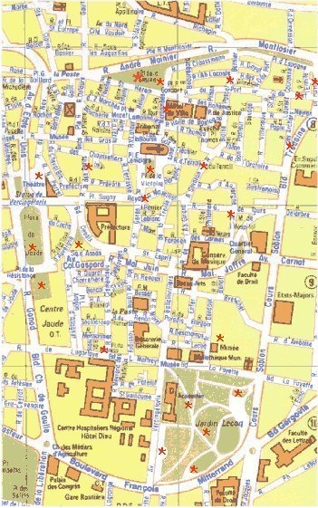

|

|
Clermont compte environ 60 fontaines ou bassins
publics et 115 fontaines privées. Nous n'avons pas de
rivière mais nous ne manquons pas d'eau !
Un puits artésien jaillissait encore
naguère en face de la Polyclinique.
Les sources minérales (22 dont 5
"pétrifiantes") ont été
réputées depuis les rois Francs au
Vème siecle.
Hors du
plan :
De nouvelles fontaines, dans le quartier
St Alyre (lien) et
près du Parc Montjuzet ont été
construites à partir de matériaux anciens, ou
modernes.
La fontaine de la rue
Fontgiève, débarrassée enfin
des échafaudages.
En
périphérie une petite fontaine de
Chauchard.
A Montferrand la
fontaine des 4 saisons.
Rue de l'Oradou
une source magnifique.
Entre Clermont et
Montferrand un espace magique.
Si vous êtes
entré directement :
entrée du
site
ici
accueil ici
|